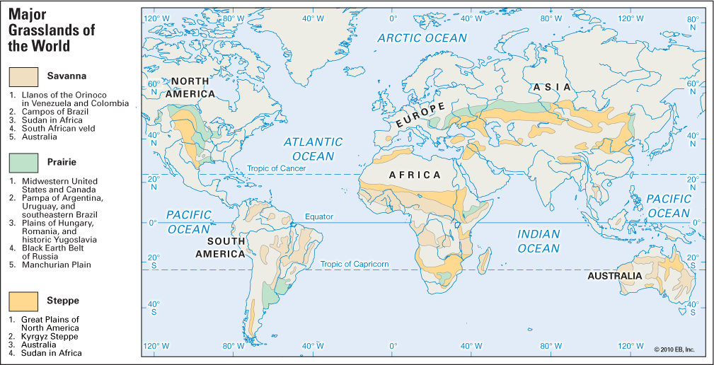
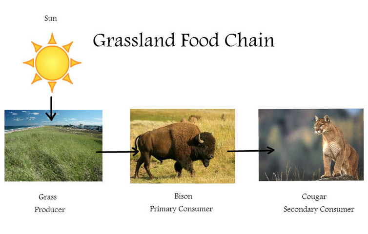
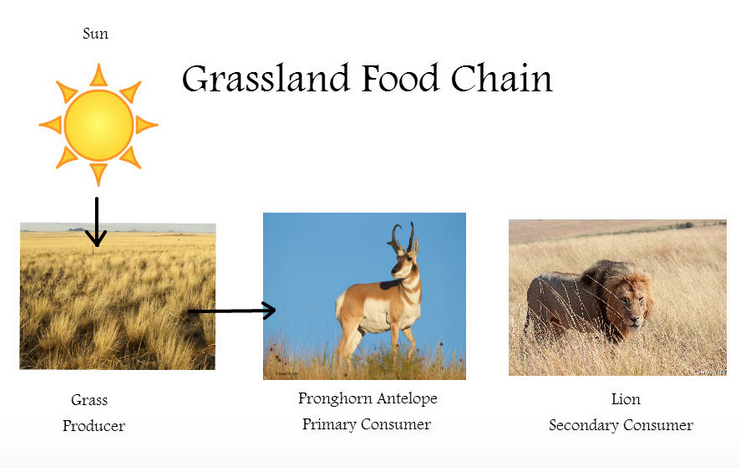
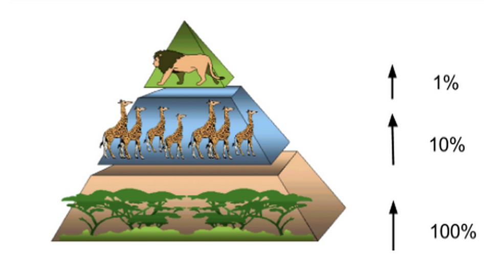

Intro to Grasslands
The Grassland Biome:
The grassland biome encompasses areas in which irregular rainfall favors grass growth. Grass growth patterns help enrich the soil immensely in these areas, so they are generally considered as areas suited for agriculture. The grassland biome is characterized as lands dominated by grasses rather than large shrubs or trees, and there are several types of grasslands.
Biome:
the world's major communities, classified according to the predominant vegetation and characterized by adaptations of organisms to that particular environment, consisting of many ecosystems whose communities have adapted to the small differences in climate and the environment inside the biome
Grasslands:
biome characterized as lands dominated by grasses rather than large shrubs or trees; there are different types of grasslands
Steppes:
dry areas of grassland with hot summers and cold winters
Temperate grasslands:
grasslands that are warm part of the year and very cold during the other part
Tropical grasslands (savannas):
grasslands that experience warm weather all year long

Food Chains:


Energy Pyramid
